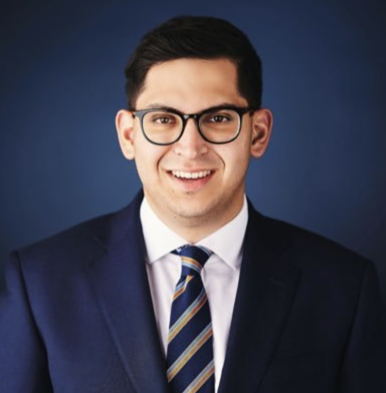

About Me
I was raised in a working class family in small-town Wisconsin. My father owned his own business and my mother was a custodian. I was active in my local Boy Scout Troop and earned my Eagle Scout. I started working at the age of 15. I know what it means to build yourself up thanks to the opportunities in America.
My political career began in suburban Wisconsin during the 2008 presidential election. A day after the Republican National Convention in Minneapolis, Senator John McCain and Governor Sarah Palin embarked on their “All-American Express” tour in my hometown of Cedarburg. As a Boy Scout in Troop 830, it was my turn to lead the Pledge of Allegiance and Presentation of Colors alongside my fellow Scouts. A crowd, illuminating lights, cameras filled the room as Secret Service agents scattered atop the buildings. It was a scene so surreal and intoxicating. I was captivated and felt instantly invested in the election. At that moment, at 13 years old, I knew I wanted to be a part of this - to have a career in politics.
My career began with an unpaid internship on Capitol Hill. However, during those pivotal three years in Washington, I was fortunate to experience a vast range of exposure to American politics. For example, I had the opportunity to work in the communications shop at the Republican Attorneys General Association during the 2018 midterm cycle. After, I served at the U.S. Department of Labor, even in the height of the COVID-19 pandemic. In 2021, I moved to the Sunshine State, and since my time in Tallahassee, I have served in the Florida Legislature and the Executive Office of the Governor, working closely with high-ranking elected officials and members of Governor's staff. Currently, I am a communications consultant with Guidehouse, one of the largest public sector and management consulting groups in the country. My role at Guidehouse involves change management and strategic communications for the Federal Aviation Administration.
Outside of the classroom, I love to travel and explore Florida. As someone who is still new to this state, I have yet to see all the natural beauty it has to offer. I am looking to explore the historic parts of Florida as well as its beaches. I have a passion for aviation and recently began earning my private pilot license.
Education
- Currently on M.A. in Mass Communication from the University of Florida
- Bachelor of Science in Finance from Wake Forest University